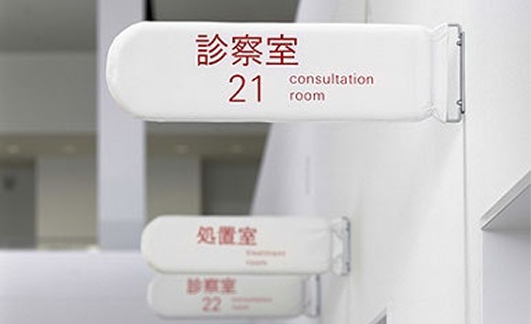

Signage system
for Umeda Hospital
Kenya Hara designed the signage system for Umeda Hospital in Osaka, reinterpreting the hospital not merely
as a medical
facility but as a space where emotional comfort and sensory consideration are essential. Aware of the
anxiety, tension,
and fatigue patients and visitors may experience, he adopted a highly restrained visual language, ensuring
that
information does not overwhelm the senses. The signs feature lowercase typography, soft color contrasts,
and ample white
space, allowing the design to blend gently into the environment. Hara emphasizes that in a hospital, what is
needed is
not visual emphasis, but guidance and that design should serve as a language of empathy, not command. This
project goes
beyond functional information delivery to become a design that resonates with the emotional and sensory
experiences of
users. It stands as a clear example of how Hara’s core design values emptiness, sensation, and white space
can
be applied meaningfully in sensitive, real-world contexts.

Through the Umeda Hospital system design, Kenya Hara emphasized that a hospital should be a space of psy-
chological
comfort, not just medical treatment. He showed that thoughtful design can bring care and dignity even to
life-critical
environments.